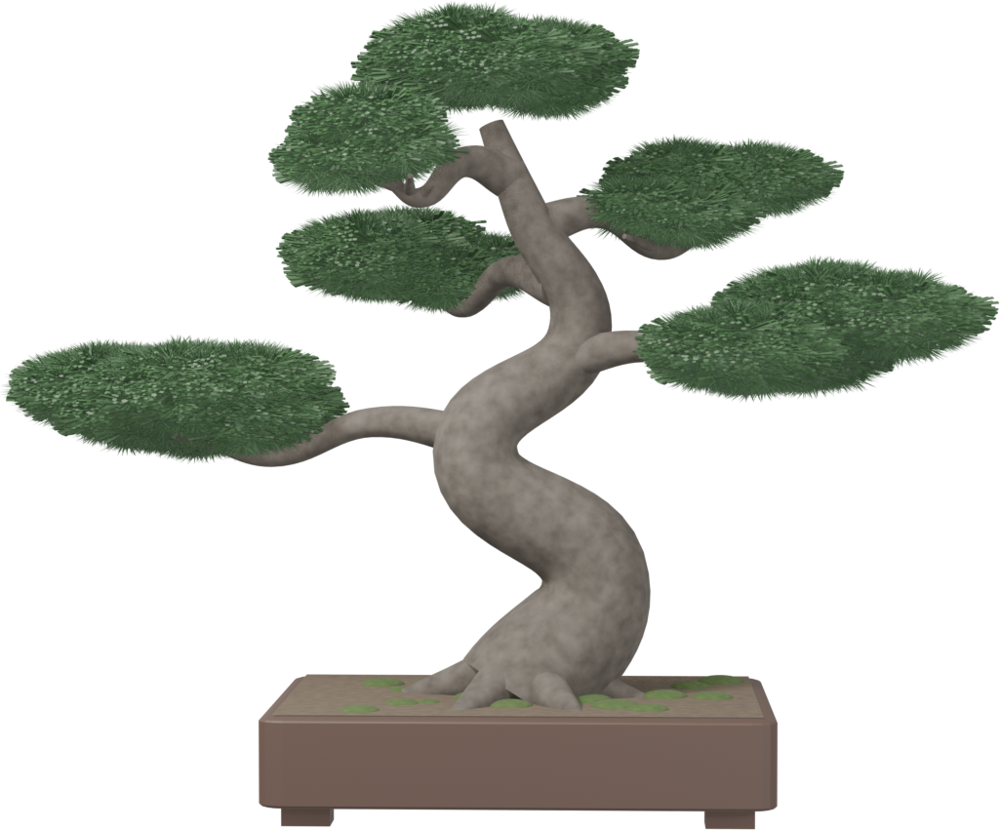

Knowledge
Films
Masters
Engawa.
Q&A
JA / EN / ES / 中
Issue 01 — The Black Pine
November 2026
Bonsai, from the masters
Pine
.

Cover story
冬も、外の寒さに
当ててください。
黒松の葉先が茶色くなった。リヨンからの相談に、二人の職人が答えた。七百年の知恵と、いまの手の言葉。
Turn the tree
Drag to rotate · 3D
Knowledge · 24 guides
Read before you cut.
01
盆栽とは何か
BASICS
02
五つの基本の樹形
BASICS
09
黒松 ― 芽切りと冬
SPECIES
10
もみじ ― 葉刈り
SPECIES
18
冬越し
SEASONS
Film · 3 min
A year of one pine.
Spring, summer, autumn, winter.
▶
03:00
Masters’ voices
鉢が凍る夜だけは、軒下になおしてください。
職
職人A（見本）· 埼玉 — 「なおす」は “repair” ではなく “move”。用語集が意味で届けます。
Q&A
Q · Milan
ベランダの真柏、初めての冬。風が強いです。
A · 職人A（見本）
寒さには強い木です。風で乾きやすいので、水を切らさないで。
Q · Valencia
「根張り」はただの根のことですか。